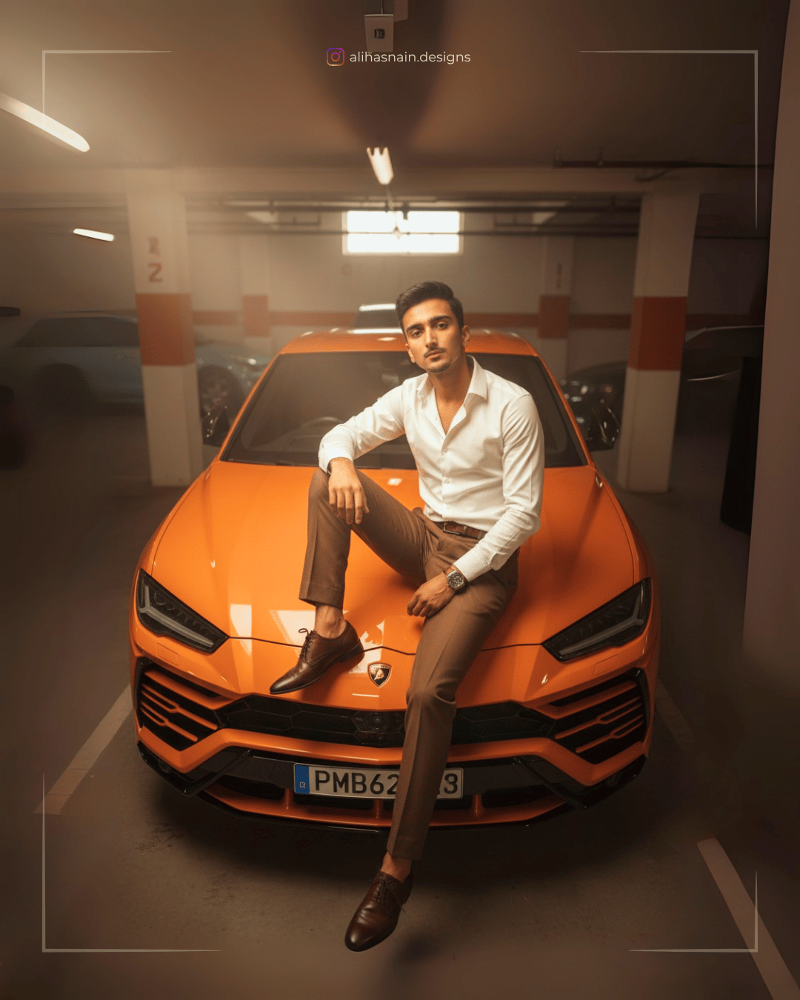
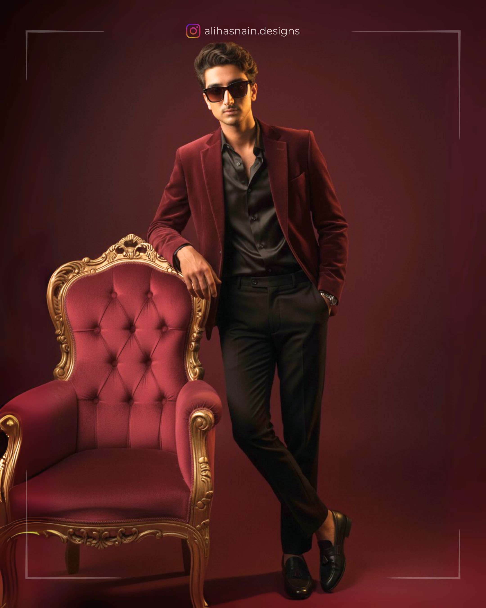
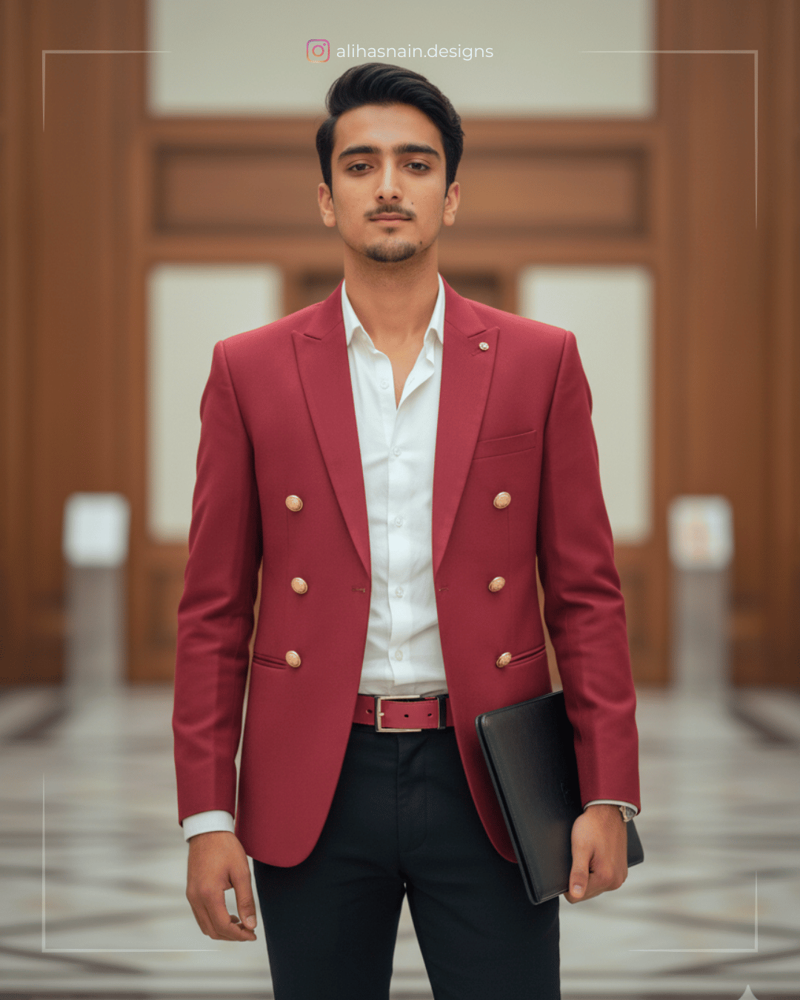
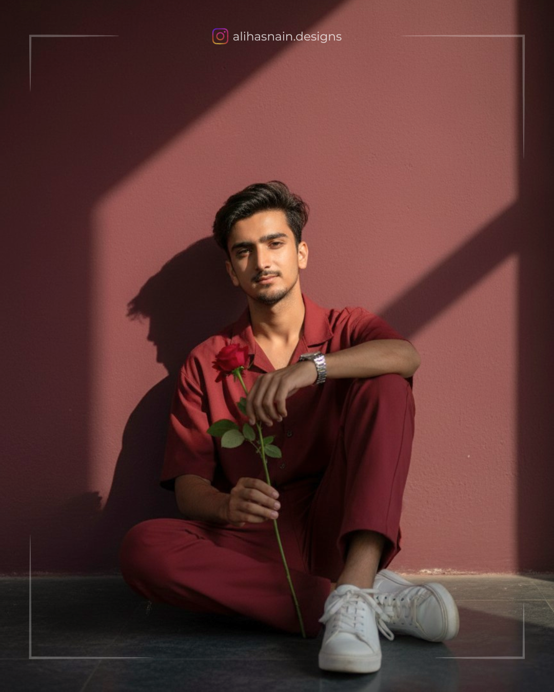

A (22-years-old) young man, riding a mountain bike and performing a high jump in the forest, seen from an extreme low angle (frog eye view) directly from underneath the bike. His face is clearly visible, looking down with a smiling expression. The bike tires are red with rugged details, dominating the foreground and creating a dramatic perspective effect. The rider is wearing a cream-colored windbreaker jacket, black denim jeans, a black baseball cap worn backward, and black gloves. The background shows tall leafless trees against a clear blue sky under slight warm natural morning sunlight. The atmosphere is dynamic, full of action, with a sense of speed and energy. Sharp details, high contrast colors, wide-angle effect. 8K resolution, DSLR quality, aspect ratio 4:3 landscape, ultra-realistic, highly detailed, sharp focus, cinematic lighting, action shot, natural sunlight, vivid colors, depth of field, dynamic composition. Exact same face based on the reference image.

Prompt 2
Generate a hyper-realistic 8k photo of me taken from an overhead high-angle perspective in a 3:4 full-body composition. the subject, lying relaxed on the hood of an orange lamborghini urus inside a dimly lit basement garage, wears a crisp white open-collar shirt, brown trousers, polished shoes, and a leather strap watch. While soft sunbeam lighting enhances the natural reflections on the car. The image features cinematic warm color grading, shallow depth of field, and creamy bokeh, creating a luxurious, billionaire-style vibe. Exact same face based on the reference image.
Prompt 3
Ultra-realistic cinematic portrait of a young man sitting inside an orange Lamborghini Urus with the driver's door open. His body is slightly turned outward, right arm resting on the door frame, left arm on his knee. Left leg bent inside, right leg angled outward on the floorboard. He wears a crisp white open-collar shirt, brown pants, polished shoes, and a leather strap watch catching light. Calm, confident expression, head slightly tilted forward, looking directly at the camera. Shot at eye level from outside the car with a portrait lens feel (50-85mm), showing him and part of the car's interior. Background: dimly lit basement garage, blurred. Warm cinematic color grading, shallow depth of field, creamy bokeh, enhanced textures, soft lighting for a billionaire-style vibe. 16mm composition. Exact same face based on the reference image.
Prompt 4
Hyper-realistic medium-up-angle full-body shot of a young man (Take uploaded image as the reference for face) leaning infront of a Land Rover Defender in a dim basement garage. Wearing oversized Nike wind cheater, baggy basketball pants. Adidas chunky sneakers, basketball cap. Hands crossed, attitude gaze. Luxury SUVs softly blurred with cinematic bokeh, shallow depth of field, strong subject separation, and 8K cinematic color grading.
Dont change my face! dont change my face!
Prompt 5
A cinematic shot of me (23 years old) leaning against a white Toyota Supra on the street, wearing a hoodie under a brown jacket. A blurry crowd of people running around me. Natural daytime lighting 30mm film styles, shallow depth of field, sharp focus on me aspect ratio 3:4.
Prompt 6
An (23 years old) stylish man in a brown leather jacket and white shirt drives a car, seen from a high angle through the windshield. He holds a pair of sunglasses to his mouth, with his left hand on the steering wheel. The bright sunlight creates a lens flare in the lower right corner, and the rearview mirror is visible at the top. The image has a warm, bright aesthetic with shallow depth of field, focusing on the boy's contemplative expression. Exact same face based on the reference image.
Prompt 7
A hyper-ultra-realistic 8K cinematie portrait of a 5'11" (22-years-old) young boy, face exactly same as in the uploaded reference image. He crouches down on one knee beside the front wheel of a sleek gray Audi e-tron GT, parked on a smooth paved waterfront with golden sunset reflections shimmering across the water. His right hand rests lightly on the car's fender, while his left hand adjusts the edge of his black puffer jacket detailed with subtle black line art. Outfit: fitted white t-shirt, dark-wash jeans, and crisp white sneakers. Tinted sunglasses on his face reflect the glossy curves of the Audi. His body angled slightly toward the camera, wearing a confident smirk, radiating charisma and cinematie style.
Ultra-detailed photorealistic textures, sharp focus, perfect golden-hour lighting, and editorial magazine vibe.
Prompt 8
Ultra realistic, 8K resolution cinematic image of a person crouching beside a powerful black horse in a snow covered mountainous landscape. Face with the face from the uploaded image, keeping the facial features exactly the same. Wears dark sunglasses, a cozy black sweater, grey cargo pants, and black boots. He crouches with one knee bent, holding the reins of the horse with a relaxed yet confident posture. The horse is muscular, with a glossy jet-black coat, flowing mane, and expressive eyes, wearing a simple Leather halter. Snow blankets the ground with footprints and scattered rocks visible. In the background, soft-focus snow-covered hills, pine trees, and distant mountain peaks stretch under clear blue sky. Snowflakes gentiy fall around them, adding depth and softness to the scene. The 23.6K lighting is soft and natural, highlighting details like the texture of the snow, fabric folds, and hair strands. The overall mood is calm, adventurous, and majestic, evoking a sense of freedom and PROMP
Prompt 9
A handsome self portrait of me is leaning against a vintage black car, lying on a grassy field filled with white daisy-like flowers. He is wearing a black suit and a white shirt. He is gently petting a white lion that is resting beside him. The scene is shot from a high-angle, capturing a magical, dream-like atmosphere with soft, warm lighting. The image is hyperrealistic, cinematic, and has eaters a rich, earthy color palette-ar 2:3-v 6.0. My age is 18 year. My height is 5 ft 11 inch.
Prompt 10
Generate a powerful and stylish image of the uploaded 22-years-old young man, 100 percent face reserved, radiating bossy gangster vibes. He is seated on a luxurious velvet sofa in a relaxed yet commanding posture, leaning slightly toward a cheetah beside him. His head is turned, gazing directly at the cheetah with a cool, composed expression, as if acknowledging its fierce power.
One arm rests on the sofa back while the other hand hovers near the cheetah, which is adorned with heavy gold chains. The man is dressed in high-fashion dark attire, either a sleek pinstripe suit or an open-collared silk shirt with bold gold jewelry. Sunglasses enhance his stylish, commanding aura. The cheetah, sitting close to him with an open-mouth, fierce expression, mirrors his aura of raw dominance. The background is simple yet luxurious - a dimly lit lounge with velvet textures or dark wood - emphasizing opulence and danger.
Prompt 11
Generate a powerful and stylish image of the uploaded 22-years-old young man, 100 percent face reserved, radiating bossy gangster vibes. He is seated confidently on a luxurious velvet sofa, leaning back in a relaxed yet commanding pose. A cheetah, adorned with heavy gold chains, sits across his lap, its sleek body draped naturally over him.
The man's head is turned slightly downward, gazing at the cheetah with a cool, composed expression, sunglasses enhancing his aura of dominance and style. One hand rests casually on the cheetah's back while the other rests along the arm of the sofa, showing both control and ease.
He is dressed in high-fashion dark attire - either a navy-blue pinstripe suit or an open-collared black silk shirt layered with bold gold jewelry. The cheetah has a fierce, open-mouth expression, mirroring the man's aura of raw power.
Prompt 12
Generate a powerful and stylish image of an uploaded 22-years-old young man, 100 percent face reserved, radiating bossy gangster vibes. He should be positioned confidently with an arm around a cheetah, which is also adorned with gold chains, similar to the reference image. The man should be dressed in high-fashion, dark-colored attire, possibly a navy-blue pinstripe suit or an open-collared shirt with prominent gold jewelry. His expression should be cool and commanding, enhanced by sunglasses. The cheetah should have an open-mouth, fierce expression, mirroring the man's powerful aura. The background should be simple yet luxurious, such as a dimly lit room with rich textures or a sleek, urban setting at night, emphasizing the opulent and dangerous aesthetic. The lighting should be dramatic, highlighting the man and the cheetah with strong contrasts and shadows to create a sophisticated yet edgy mood.
Prompt 13
A cinematic low-light portrait of a stylish (22-years-old) young man, use 100% uploaded face, seated in a plush leather armchair inside a dark wood-paneled office with faint golden light. He wears a tailored navy-blue pinstripe designer suit with the black shirt slightly unbuttoned, layered gold chains visible, heavy rings on his fingers, and a chunky luxury watch, tinted sunglasses, expression sharp and ruthless, exuding confidence and authority. The background is dark, moody, and powerful, with subtle hints of security guard blurred in the distance. Ultra photorealistic, cinematic shadows, 8k detail, aura of wealth, power, and gangster-politician dominance.
Prompt 24
A (22-years-old) young person is seen wearing a navy-blue pinstripe suit with black shirt and looking at themselves in a large, round mirror. They appear to be buttoning or adjusting their suit. Their reflection is clearly visible in the mirror, with some bright light bulbs also visible on the wall behind them. It looks like they are in a changing room or dressing room. He is in a relaxed yet commanding posture.
Prompt 15
A confident young man from the image sitting on a luxurious brown leather sofa, dressed in a crisp white shirt, black fitted trousers, and polished black formal shoes. He poses elegantly with one hand resting on the sofa arm. The background features a dark wooden paneled wall, softly lit with warm ambient light, and a grand framed portrait of second provided image hanging above, adding a scholarly and royal atmosphere. Exact same face based on reference image.
Prompt 16
A cinematic, ultra-realistic portrait of a fashionable young man leaning confidently against an ornate royal-style red door with golden decorative details, radiating power, elegance, and charisma. He wears a deep burgundy velvet blazer over a black three-piece suit, paired with a crisp white dress shirt and a slim black tie. His stance is relaxed yet commanding, with one arm resting on the golden door handle and the other tucked casually into his pocket. Overall image lighting is soft daylight.
Prompt 17
Hyper-realistic cinematic full-body shot of me on a deep burgundy backdrop. Maroon velvet blazer, black silk shirt, slim trousers and sunglasses. Leaning on maroon and golden elegant chair, one arm draped, confident gaze. Rich waves with highlights. Golden spotlight, dramatic shadows, ultra-detailed fabrics, skin tones, luxury editorial vibe. 85mm lens, 9:16 Instagram style. The face must match the reference image of me.

Prompt 18
A stylish young man with voluminous, well-styled hair, sitting casually on a modern chair against a plain background. He is wearing a deep maroon jacket over a black outfit, accessorized with a wristwatch. He holds a pair of sunglasses near his lips in a confident, charismatic pose, exuding modern elegance and charm. The image should be hyper-detailed with sharp focus on the subject, rich color grading, and have a cinematic quality. 8k resolution, hyperrealistic, FHD. The face must match the reference image of me.

Prompt 19
Ultra realistic, high resolution cinematic image of me (22 years old) young man. He is dressed in a striking red blazer with golden buttons, paired with a white shirt that is open at the chest, He wears black fitted trousers with a red leather belt that matches the blazer In his left hand, he carries a sleek black folder, adding a professional touch. The background is a softly blurred elegant architectural interior with soft ambient lighting, creating depth and focus on the subject. The lighting highlights the texture of the fabric, and the calm, determined expression on his face. The overall mood is cinematic, stylish, bold, and powerful.
Exact same face based on the reference image!

Prompt 20
A full-body, camera look-angle portrait of a handsome 22-year-old boy, approximately 5'9" tall. He is sitting on the ground in a stylish pose against a solid deep wine-colored wall, with deep shadows creating a 90s movie and romantic, windy environment. He is wearing a perfect red wine-colored, retro aesthetic shirt with matching pants and white sneakers. He has a silver watch and is holding a single rose flower in hand. Exact same face based on the reference image.